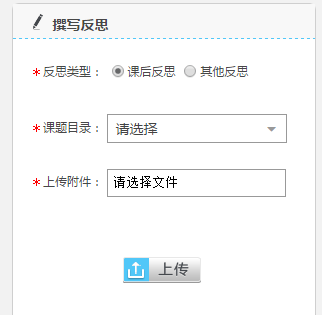
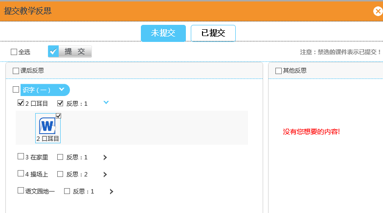
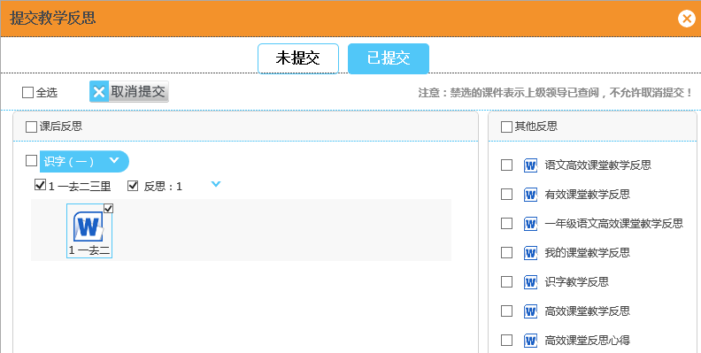
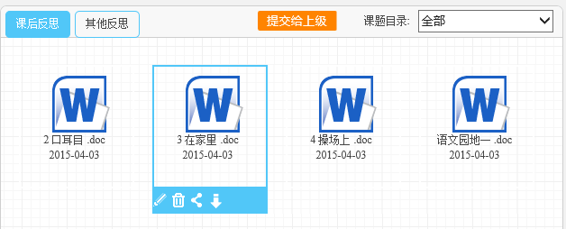

3.2.4 教学反思
1、上传反思
教师用户可以在这里撰写自己的课后反思和其他类型反思，选择反思类型，课题目录，并上传附件，并点击保存完成反思上传。（如图3.2.4-1）
2、提交反思
用户可以选择性的提交给上级反思。选择要提交的反思，点击“提交”，可以完成反思提交给上级的操作。（如图3.2.4-2）
取消提交：点击“取消提交”可以完成取消提交给上级反思的操作。（若文章已被领导查阅，则不允许取消提交）（如图3.2.4-3）
3、反思整理
用户可以对反思信息进行修改，删除，分享，取消分享，下载，查看查阅，查看评论操作。（如图3.2.4-4、图3.2.4-5）
